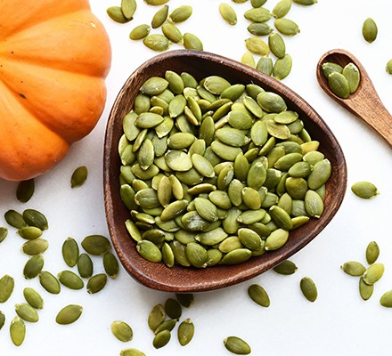
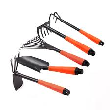

Our Products
Our Exclusive Packages for every farmer.

fertilizer

seeds

Wide range of Features Available at UpKisan.
Our soil analyzer measures pH, fertility, moisture, and light levels, providing essential data for optimal plant growth and soil management with ease and accuracy. It helps users identify nutrient deficiencies, adjust soil conditions, and make informed decisions to enhance crop yields and plant health. This tool is ideal for farmers, gardeners, and researchers seeking precise soil insights.
SOur Self Help Bot offers personalized guidance and support, providing users with mental health resources, stress management techniques, and goal-setting strategies. It helps individuals navigate emotional challenges, build resilience, and foster a positive mindset through interactive sessions and tailored advice. This bot is designed for anyone seeking self-improvement and emotional well-being.
IOur Weather Prediction system delivers accurate forecasts using advanced algorithms and real-time data. It provides users with detailed information on temperature, precipitation, wind, and other weather conditions, helping them plan daily activities, manage outdoor events, and prepare for severe weather conditions. This tool is essential for travelers, event planners, and anyone needing reliable weather insights.
Our Exclusive Packages for every farmer.
Authors who have created a sense of collectiveness among young readers.
Made an inspirational, and historical start to make it a reality.
Anchit is an undergrad from MIT Bengaluru founding member of UpKisan.

V Sriram is an undergrad from MIT Bengaluru founding member of UpKisan.
Ryan is an undergrad from MIT Bengaluru founding member of UpKisan.
Shouraya is an undergrad from MIT Bengaluru founding member of UpKisan.
Here is what are loyal customers say about us.
"I have been farming for over 20 years, and I always believed that traditional methods were the best. But integrating AI into my farm has been a game-changer. With AI-powered sensors and data analysis, I can now monitor soil health, predict weather patterns, and manage irrigation efficiently. The automated pest detection system has reduced crop damage, and real-time data insights help me make informed decisions. My yield has increased by 30%, and I’m saving both time and resources. AI has truly empowered me to farm smarter, not harder. I highly recommend it to every farmer looking to modernize their practice."
"Before integrating AI into my farming, I relied heavily on traditional methods, which often led to unpredictable yields and high costs. But after adopting AI-powered precision farming, everything changed. AI sensors now analyze soil moisture and nutrient levels, helping me apply fertilizers and water only when needed. The AI-based pest detection system alerts me in real-time, reducing crop damage significantly. As a result, my yield increased by 35%, and my costs dropped by 25%! AI has truly revolutionized my farm, making it more productive and sustainable. I highly recommend it to every farmer looking to improve efficiency and profits."
Before I started using AI on my farm, I was constantly guessing when to water, fertilize, and deal with pests. Now, thanks to AI-powered insights, I know exactly what my crops need and when. My yields have increased by over 30%, and I've saved both time and money by optimizing every step of my process. It’s like having a smart partner who’s always one step ahead—making sure my farm stays healthy and productive. I couldn’t be happier with the results!"